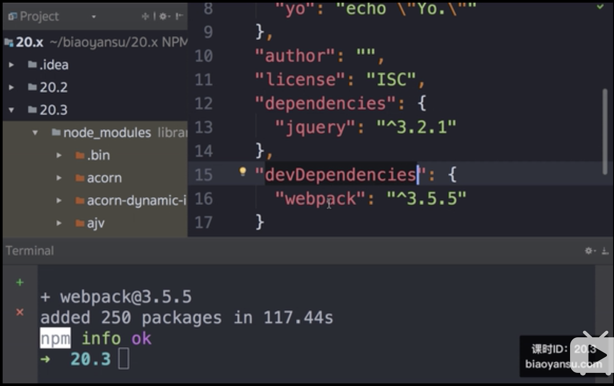

Npm And Yarn
Npm和Yarn
npm概念
Npm就是Node Package Manager，也就是Node包管理工具。
npm用途
如果不使用包管理器，有什么麻烦的呢？
这是源于代码包分享的理念，包和依赖越来越多，每个包都有自己的版本和发展，而包与包之间也有依赖。版本管理就成了一件令人头痛的事。
比如jQuery插件A(版本1)，依赖于jQuery(版本1)，当你把jQuery版本更新为2的时候，A很可能就挂掉了。各个插件间也有依赖，插件A挂掉了，可能B也挂掉了，
连接挂掉是噩梦一般，你要一个个去查文档，看每个包要求依赖的版本，然后自己协调。
这时候npm就应运而生了，不仅可以帮你把各种包从网上download下来，最主要的是还可以帮你管理不同包之间的关系，
比如你当前的版本号是多少，你依赖着谁，你依赖的版本号是多少都一目了然。
npm实现具体步骤
NPM 的思路大概是这样的：
买个服务器作为代码仓库（registry），在里面放所有需要被共享的代码
发邮件通知 jQuery、Bootstrap、Underscore 作者使用 npm publish 把代码提交到 registry 上，分别取名 jquery、bootstrap 和 underscore（注意大小写）
社区里的其他人如果想使用这些代码，就把 jquery、bootstrap 和 underscore 写到 package.json 里，然后运行 npm install ，npm 就会帮他们下载代码
下载完的代码出现在 node_modules 目录里，可以随意使用了。
这些可以被使用的代码被叫做「包」（package），这就是 NPM 名字的由来：Node Package(包) Manager(管理器)。
npm的发展
那么 npm 是怎么火的呢？
npm 的发展是跟 Node.js 的发展相辅相成的。
Node.js 是由一个在德国工作的美国程序员 Ryan Dahl 写的。他写了 Node.js，但是 Node.js 缺少一个包管理器，于是他和 npm 的作者一拍即合、抱团取暖，最终 Node.js 内置了 npm。
后来的事情大家都知道，Node.js 火了。
随着 Node.js 的火爆，大家开始用 npm 来共享 JS 代码了，于是 jQuery 作者也将 jQuery 发布到 npm 了。
所以现在，你可以使用 npm install jquery 来下载 jQuery 代码。
现在用 npm 来分享代码已经成了前端的标配。
npm使用方法
进入新建的工作目录，然后进行npm的初始化。
1 | npm init -t |

在项目目录下生成了一个package.json文件。
然后安装jQuery包。然后npm就会帮你看有没有jQuery这个包。如果存在的话就帮你安装到根目录下node_modules这个文件夹下。
1 | npm i jQuery |

并且你安装的包的版本信息还会被自动记录到package.json的dependencies里面。是一对一的。即使之后你把node_modules文件夹全部删除了，
在你重新初始化的时候，它会读取dependencies里的信息，然后再重新生成对应的node_modules文件夹。
npm常用配置
package.json的script
在script里会执行你指定的命令。
比如写一个yo，输出yo的指令，然后npm run yo,就会看到命令行输出了yo
区别生产环境和开发环境用下面的命令
1 | npm i webpack --save-dev |
安装成功之后可以看到package.json里多了一个devDependencies。也就是用于生产环境下的依赖。

yarn和npm的不同
Yarn是由Facebook、Google、Exponent 和 Tilde 联合推出了一个新的 JS 包管理工具 ，正如官方文档中写的，Yarn 是为了弥补 npm 的一些缺陷而出现的。
npm有几个不好的特点
- npm install的时候巨慢。特别是新的项目拉下来要等半天，删除node_modules，重新install的时候依旧如此。
- 同一个项目，安装的时候无法保持一致性。由于package.json文件中版本号的特点，下面三个版本号在安装的时候代表不同的含义。
例如：
1 | "5.0.3", |
“5.0.3”表示安装指定的5.0.3版本，“～5.0.3”表示安装5.0.X中最新的版本，“^5.0.3”表示安装5.X.X中最新的版本。这就麻烦了，常常会出现同一个项目，有的同事是OK的，有的同事会由于安装的版本不一致出现bug。
- 安装的时候，包会在同一时间下载和安装，中途某个时候，一个包抛出了一个错误，但是npm会继续下载和安装包。因为npm会把所有的日志输出到终端，有关错误包的错误信息就会在一大堆npm打印的警告中丢失掉，并且你甚至永远不会注意到实际发生的错误。
yarn的优点
速度快：
速度快主要来自以下两个方面：
并行安装：无论 npm 还是 Yarn 在执行包的安装时，都会执行一系列任务。npm 是按照队列执行每个 package，也就是说必须要等到当前 package 安装完成之后，才能继续后面的安装。而 Yarn 是同步执行所有任务，提高了性能。离线模式：
如果之前已经安装过一个软件包，用Yarn再次安装时之间从缓存中获取，就不用像npm那样再从网络下载了。安装版本统一：
为了防止拉取到不同的版本，Yarn 有一个锁定文件 (lock file) 记录了被确切安装上的模块的版本号。每次只要新增了一个模块，Yarn 就会创建（或更新）yarn.lock 这个文件。这么做就保证了，每一次拉取同一个项目依赖时，使用的都是一样的模块版本。npm 其实也有办法实现处处使用相同版本的 packages，但需要开发者执行 npm shrinkwrap 命令。这个命令将会生成一个锁定文件，在执行 npm install 的时候，该锁定文件会先被读取，和 Yarn 读取 yarn.lock 文件一个道理。npm 和 Yarn 两者的不同之处在于，Yarn 默认会生成这样的锁定文件，而 npm 要通过 shrinkwrap 命令生成 npm-shrinkwrap.json 文件，只有当这个文件存在的时候，packages 版本信息才会被记录和更新。更简洁的输出：
npm 的输出信息比较冗长。在执行 npm install 的时候，命令行里会不断地打印出所有被安装上的依赖。相比之下，Yarn 简洁太多：默认情况下，结合了 emoji直观且直接地打印出必要的信息，也提供了一些命令供开发者查询额外的安装信息。多注册来源处理：
所有的依赖包，不管他被不同的库间接关联引用多少次，安装这个包时，只会从一个注册来源去装，要么是 npm 要么是 bower,防止出现混乱不一致。更好的语义化：
yarn改变了一些npm命令的名称，比如 yarn add/remove，感觉上比 npm 原本的 install/uninstall 要更清晰。
将npm换到yarn
从npm安装yarn
1 | # npm install -g yarn |
在app根目录下确认package.json
1 | # ls -1 ./ | grep package.json |
执行yarn，并确认yarn.lock是否生成
1 | # ls -1 ./ | grep yarn.lock |
使用yarn命令行安装，这里和npm install一样，在node_modules文件夹下安装各种包。
1 | # yarn install |
和npm run dev一样, 可以运行
1 | # yarn run dev |